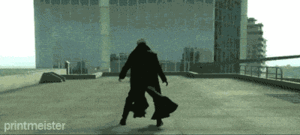

Zapato
 De: La Frikipedia, la enciclopedia extremadamente seria.
De: La Frikipedia, la enciclopedia extremadamente seria.

|
La información contenida en este artículo es una mínima parte de su jugo total, así que ponte los guantes, saca el tupperwere y empieza a exprimir el tema. Si lo haces serás recompensado con una galleta en almíbar y algo más.
|
| De la serie armas de ayer y hoy:
|
| Zapato
|
|
|
| Fecha de invención
|
Aproximadamente el 10.000 A.M.999(Antes de MOSTRO 999)
|
| Letalidad
|
Depende del objetivo
|
| Peligrosidad (para uno mismo)
|
Nula, es mas puedes meter los pies dentro y usarlos(propósito original)
|
| Es efectivo contra
|
Insectos, gatos, vecinos molestos, presidentes de Estados Unidos, etc...
|
| Personas que mata por minuto
|
tranqui...120
|
| Alcance (Si lo tiene)
|
Menos de 3m (dependiendo del brazo del tirador)
|
| ¿Sirve en la actualidad?
|
Todo el mundo
|
| Nivel de Frikismo
|
Medio bajo
|
| Dificultad de uso
|
+3
|
| Precio
|
Dependiendo de la marca, desde 5 leros, hasta 1 millon
|
| ¿Es recomendable?
|
Sí
|
Un zapato es un pedazo de cuero, amoldado a la forma de un pie humano, que en los tiempos de su invención se creo para caminar(duh!!!) hasta que a un periodista loco de mierda muy simpático se le ocurrió que podía usarse para baja´lo de un chancletazo al presidente de los gringos, a los vecinos indeseables, etc.
Antecedentes como arma
En el siglo XD A.C. un egipcio estaba harto de un mosquito que lo andaba molestando, cuando este se posó sobre la mesa, a el se le ocurrió sacarse los zapatos y aplastarlo. Y lo consiguió, así fue que logró el record XIIILIIFIITIXIXVV Por la eliminar una cucharacha en la pared a mas de 3 metros.Siendo condecorado con el rango del dios Zapatiri, y dotado de inmortalidad,sigue vivo hasta nuestros días y ocupa el cargo de presidente de Aspaña. En el año 1806, fecha en que los hijos de la reputísima madre que los recontramil parió generales del Royal British Pirate Army decidieron extender su imperio hasta la república Argentina, pero los argentinos los repelieron arrojándoles sus zapatos por la cabeza provocándoles numerosas bajas a los PERROS no, PIRATAS!! no, INGLESES no, sí!!! sí!!! provocaron numerosas bajas a los Ingleses De mierrrrrrrda!!!!!!!!. En la Segunda guerra Mundial, Los soldados de las Waffen SS sin nada que se asemejara a un proyectil,  El arma siendo disparada contra un gilipollus in extremis en modo Matrix
En el año 2008, un amigo mío llamado Mostazer Al Zaidi los utilizó contra el presidente de los gilipollas con tanto éxito que si bien no le dió, le levantaron un monumento en su honor. Como el héroe que es.
La variante de zapato más destructiva que se conoce se llama Bota Walker, la cual no es un arma arrojadiza, sino que va en pìes de Pie Grande, y un impacto de esta arma es capaz de destruir a un Super Sayan nivel 4 de un solo golpe.
Daños que causar
Aquí detallaremos los distintos daños que pueden causar las variedades de zapatos en circulación. Tenga cuidado.
- Golpes: duelen.
- Politraumatismo de cráneo: Si eres un buen tirador, puedes cargarte a tu objetivo de un head-shot y provocarle un daño craneal que incluye las siguientes consecuencias:
- Pérdida del conocimiento: Te olvidas de donde carajo lo habías dejado y no lo encuentras donde lo buscas y entonces te desmayas, tus ojos se cierran, y por tanto no ves nada, y te duele.
- Internaciones en el hospital: tiene sus lados lindos, ya que a veces te tocan enfermeras buenorras, puedes conocer al Dr. House, Comida gratis...
- Perdida de la capacidad cerebral: No te preocupes IP anónima, solo afecta a personas con cerebro.
- Muerte por intoxicación: Si llevas puesto el arma durante varías horas y has estado corriendo en un cálido día, puede que al desenfundar el zapato para matar al objetivo, desprenda un vaho fortísimo que mata a todo ser vivo en un radio de 5 metros.
- Daños colaterales por lanzamiento fallido:
- Hematomas por golpe de zapato a un inocente.
- Pagar una multa por escandalo publico.
- Correr los 100 metros no lisos por tu pueblo porque jodiste el mostrador de una tienda.
- Dolorosas duricias en los pies porque te quedaste sin zapatos a consecuencia de que te cayeron al rio.

|
|
|
Autor(es):
- AlemanH
- MOSTRO 999
- Joanj94
- Thelordg95
- JDR99
Frikipedia 2005-2016, Licencia
GFDL 1.2 - Extraído por FrikiLeaks